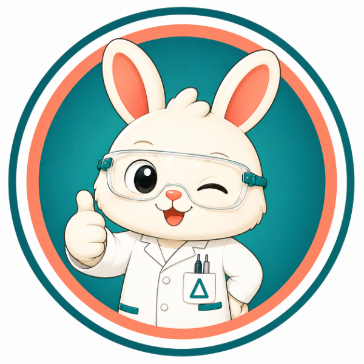

About
모두를 위한
과학 실험실
labbitory.com은 중학교 과학 교사 김도윤 선생님이 만든 AI 에듀테크 플랫폼이에요. 버니어·파스코 척척박사부터 교실에서 쓸만한 작은 앱까지, 과학 수업과 학급 운영에 진짜 도움이 되는 도구를 직접 만들어 한곳에 모았어요.
학생에게는 과학 탐구를 더 쉽고 즐겁게, 선생님에게는 수업 준비와 학급 운영의 수고를 덜어주는 것 — 그게 이 작은 실험실이 바라는 모습이에요.
김도윤 선생님 소개 →